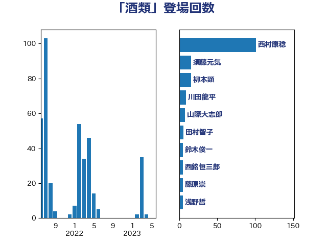

単語「酒類」

| 西村康稔 | 自由民主党 | 101 回 |
| 須藤元気 | 無所属 | 16 回 |
| 柳本顕 | 自由民主党 | 16 回 |
| 川田龍平 | 立憲民主党 | 9 回 |
| 山際大志郎 | 自由民主党 | 8 回 |
| 田村智子 | 日本共産党 | 6 回 |
| 鈴木俊一 | 自由民主党 | 5 回 |
| 西銘恒三郎 | 自由民主党 | 5 回 |
| 藤原崇 | 自由民主党 | 5 回 |
| 浅野哲 | 国民民主党 | 5 回 |
| 塩川鉄也 | 日本共産党 | 5 回 |
| 西村智奈美 | 立憲民主党 | 4 回 |
| 緑川貴士 | 立憲民主党 | 4 回 |
| 竹詰仁 | 国民民主党 | 4 回 |
| 玄葉光一郎 | 立憲民主党 | 4 回 |
| 横山信一 | 公明党 | 4 回 |
| 岸田文雄 | 自由民主党 | 4 回 |
| 山本博司 | 公明党 | 4 回 |
| 大家敏志 | 自由民主党 | 4 回 |
| 和田政宗 | 自由民主党 | 3 回 |
| 吉川元 | 立憲民主党 | 3 回 |
| 田村まみ | 国民民主党 | 2 回 |
| 横沢高徳 | 立憲民主党 | 2 回 |
| 梅村聡 | 日本維新の会 | 2 回 |
| 小野田紀美 | 自由民主党 | 2 回 |
| 宮本周司 | 自由民主党 | 2 回 |
| 塩村あやか | 立憲民主党 | 2 回 |
| 上田勇 | 公明党 | 2 回 |
| 高鳥修一 | 自由民主党 | 1 回 |
| 長谷川岳 | 自由民主党 | 1 回 |
| 金子恵美 | 立憲民主党 | 1 回 |
| 萩生田光一 | 自由民主党 | 1 回 |
| 窪田哲也 | 公明党 | 1 回 |
| 稲津久 | 公明党 | 1 回 |
| 田村憲久 | 自由民主党 | 1 回 |
| 田名部匡代 | 立憲民主党 | 1 回 |
| 武部新 | 自由民主党 | 1 回 |
| 梅村みずほ | 日本維新の会 | 1 回 |
| 柴田巧 | 日本維新の会 | 1 回 |
| 枝野幸男 | 立憲民主党 | 1 回 |
| 東徹 | 日本維新の会 | 1 回 |
| 後藤茂之 | 自由民主党 | 1 回 |
| 後藤祐一 | 立憲民主党 | 1 回 |
| 平木大作 | 公明党 | 1 回 |
| 平口洋 | 自由民主党 | 1 回 |
| 岩本剛人 | 自由民主党 | 1 回 |
| 岡本三成 | 公明党 | 1 回 |
| 山添拓 | 日本共産党 | 1 回 |
| 小林茂樹 | 自由民主党 | 1 回 |
| 宮崎勝 | 公明党 | 1 回 |
| 吉川沙織 | 立憲民主党 | 1 回 |